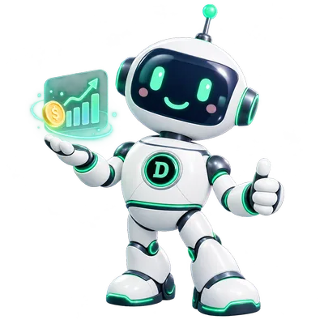

Finanças
Dyno
Gastos, receitas, contas a pagar, metas e relatórios.
PRODUTOS PRÓPRIOS
Conheça o ecossistema Dyno, nascido na DM ObservaIT: o Dyno AI, o DynoApp para pessoas e o Dyno Business para empresas, com as soluções Sales, Finance, Flow, Intelligence e Connect.
01PRODUTO DO ECOSSISTEMA
O Dyno nasceu dentro do ecossistema DM ObservaIT, desenvolvido em conjunto por DM AI Solutions e DM Software.
Hoje ele reúne uma inteligência central, o Dyno AI, e dois produtos: o DynoApp, para pessoas e famílias, e o Dyno Business, para empresas de qualquer segmento.
02ARQUITETURA DO ECOSSISTEMA
O ecossistema Dyno se organiza em camadas: a DM ObservaIT na governança, o Dyno AI como inteligência central, dois produtos e soluções especializadas sobre o mesmo núcleo empresarial.
Arquitetura de referência. O compartilhamento de tecnologia não implica compartilhamento de dados entre produtos e empresas, e nem todas as capacidades estão disponíveis hoje: o status de cada solução está indicado abaixo.
03DYNO AI
Uma camada de IA que interpreta, analisa e automatiza nos produtos Dyno, respeitando dados, módulos e permissões. Os mascotes são a forma de conversar; o Dyno AI é o motor.
Texto, áudio, foto ou PDF viram um pedido claro.
Usuário, empresa e permissões vêm do acesso autenticado, nunca do texto da mensagem.
Ações sensíveis passam por revisão; sem módulo liberado, a ação é negada.
Diz o que consultou e o que alterou, com registro por produto e empresa.
Em usono DynoApp e nos pilotos do Dyno BusinessEm implantaçãocontrole central de ferramentas, aprovações e limites de uso
04DYNOAPP · PESSOAS E FAMÍLIAS
Assessoria pessoal pelo WhatsApp, com duas personalidades. Dados pessoais e familiares ficam separados de qualquer empresa.
Em usoversão beta

Gastos, receitas, contas a pagar, metas e relatórios.
Lembretes que insistem, tarefas, listas e compromissos.
Você será direcionado ao site oficial do produto.
05DYNO BUSINESS · EMPRESAS
Plataforma empresarial horizontal e modular, para qualquer segmento. Cada empresa tem seu ambiente, seus usuários e só os módulos que contratou.
Em implantaçãoem piloto com as primeiras empresas
Em usoEm implantaçãoPlanejado
CRM, vendas e automação comercial.
Gestão financeira e cobranças.
Processos, tarefas e aprovações.
Dashboards, indicadores e análises com IA.
Integrações, APIs e conectores.
As soluções são pacotes sobre o mesmo núcleo, não sistemas separados. Combine as que fazem sentido e libere novos módulos quando precisar.
Conhecer o Dyno BusinessItens marcados como “Em implantação” ou “Planejado” ainda não estão disponíveis para todos os clientes. Integrações dependem de análise das APIs, permissões e contratos de cada serviço.
06ORIGEM · CONSTRUÍDO EM CONJUNTO
A área do ecossistema dedicada a agentes, automação e soluções de inteligência artificial.
A área dedicada a produtos SaaS e desenvolvimento de soluções digitais.
Produto SaaS desenvolvido em conjunto pelas duas áreas. Conheça a proposta completa no site oficial.
Acessar dynoapp.com.brVAMOS CONECTAR AS IDEIAS?